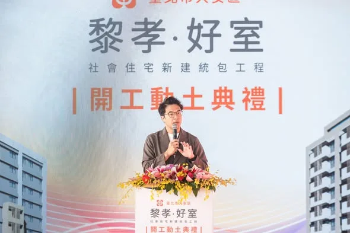

台北 沈伯洋puma.taipei

月圓，是團聚的時刻；團圓，有很多不同的模樣。 ⠀ 有人與家人圍坐吃飯，有人和朋友相聚，有人仍堅守工作崗位，也有人選擇安靜地度過今晚。 ⠀ 無論怎麼過，我都想把台北打造成一座接住每個人的城市，讓每個人都有自己的歸屬。 ⠀ 歡迎大家留言告訴我，今年中秋，你最希望實現的願望是什麼？ 願今晚的月光，照亮你回家的路，也陪伴你未完成的夢想。 ⠀ 祝大家中秋節快樂，平安順心 🌕
Posts
月圓，是團聚的時刻；團圓，有很多不同的模樣。 ⠀ 有人與家人圍坐吃飯，有人和朋友相聚，有人仍堅守工作崗位，也有人選擇安靜地度過今晚。 ⠀ 無論怎麼過，我都想把台北打造成一座接住每個人的城市，讓每個人都有自己的歸屬。 ⠀ 歡迎大家留言告訴我，今年中秋，你最希望實現的願望是什麼？ 願今晚的月光，照亮你回家的路，也陪伴你未完成的夢想。 ⠀ 祝大家中秋節快樂，平安順心 🌕


老師顧孩子，我們挺老師！ 讓老師少一分負擔，給孩子多一分陪伴 今天參加高雄市教育產業工會「＃928教育磐石—歷久彌堅」頒獎典禮暨感恩餐會，恭喜所有得獎夥伴！謝謝何耿旭理事長與工會團隊，長年為教師權益奔走，將校園第一線的問題帶進公共討論。 老師每天備課、教學、照顧學生，也承擔不少行政工作。要讓老師有時間關心每個孩子，就要從增加人力、減輕工作負擔，以及避免濫用投訴著手。 今年七月，我簽署高教產提出的六項教育訴求。未來會推動降低班級人數、補足專業人力、減輕行政負擔，強化特教與弱勢學生的照顧，也讓教師、家長與學校有充分溝通、共同解決問題的管道。 教師節即將到來，謝謝每一位在課堂內外陪伴孩子的老師。照顧學生的同時，也請記得照顧自己，祝大家 ＃教師節快樂！ 高雄小金剛許智傑 康裕成 高雄市議長 鄭光峰 高雄市議員 高雄市議員郭建盟 陳慧文 高雄市議員 李雅慧 高雄市議員張博洋 尹立 左營楠梓市議員參選人

龍介最強婚育宅政策「你生孩子、我供房子」

前鎮漁港需要務實對策，不需要「先唱衰、再收割」！ 前鎮漁港是世界級的遠洋漁港，漁獲佔全台九成，前鎮漁港的發展與漁民權益，是我長期關心推動，五大建設81億爭取到位，許多細項也多次召開協調會處理，攤商與船員關切的事項，中央、地方早處理拍板定案。 9月17日，我陪同行政院秘書長 張惇涵 Chang Tun-Han 、農業部長陳駿季實地視察，並與陳其邁市長共同討論，漁業署確定公布「兩年試營運計畫」： ✅ 運銷中心攤商兩年免費進駐，依衛生標準與使用需求調整動線、降溫及攤位設備。 ✅ 船員住宿費再爭取降至100元，餘額協調由船東負擔，外籍漁工等同免費入住。 ✅ 改善船員大樓供水、異味、隔音，持續爭取增加接駁公車班次，回應實際需求。 今年度預算藍白主提凍結「漁業發展」預算1000萬元、凍結「漁業管理」預算2000萬元，民眾黨團也凍結7581萬的漁業相關預算。相關言行漁民及高雄市民都看在眼裡。 「高雄城市轉型沒有退路」，前鎮漁港啟用超過50年，才好不容易爭取到81億元經費翻新整建，追求的是遠洋漁業升級的寶貴機會。高雄需要的是能夠解決問題的市長，讓城市持續升級的市長，我會持續盯緊改善進度，讓攤商安心做生意、船員安心休息，回應所有漁民的期待。


清潔隊員是守護城市的無名英雄，有他們辛苦付出，才有乾淨美麗的台中。 今天我與台中隊共同宣布「五大承諾 守護清潔第一線」政策，要全面提升清潔隊員的待遇和工作安全： ✅夜點費加碼100元 ▪️由現行100元至120元，提高至200元至220元，將成全國第一，並隨物價適時調整 ▪️針對焚化廠及特殊高風險勤務研議額外加給 ✅擴大人力 ▪️盤點各區服務人口、清運量及勤務負擔，建立合理公開的人力配置標準，逐年擴編員額 ▪️檢討並加速儲備隊員及臨時人員轉正，縮短等待時間，落實同工同酬保障 ✅加速車輛更新 ▪️編足維修經費、下修車輛淘汰年限，優先汰換車齡高、故障頻繁、維修成本高及安全配備不足的車輛 ▪️針對仍在使用的舊式車輛，逐年增設環景影像、倒車警示等設備 ✅裝備升級 ▪️編列專案預算，採購符合職業安全與電氣安全規範的風扇衣，納入標準工作裝備，全面配發具有高溫暴露風險的外勤人員，並完善包含雨衣雨具等各項勤務裝備 ▪️針對大型廢棄家具及床墊處理，將添購大型廢棄物破壞處理機具，增加載運地點及暫置空間，提升清運與處理量能 ✅環保志工隊業務費提高至每年6萬元 將每隊每年業務費由現行2萬4,000元提高至6萬元，讓志工隊運作獲得充足經費支持 清潔隊員的工作繁雜又危險，市府應該成為第一線最有力的後盾，讓他們待遇有保障、勤務更安全、裝備更完善，讓守護城市的英雄受到應有的尊重！ #心存大台中 #市長換欣_台中創新 #首都格局_台中進擊

這兩天，我走進 #大梨山地區，接連來到梨山天龍宮、松茂天松宮、環山環清宮、佳陽碧雲宮參拜，也和在地鄉親坐下來暢談未來的 #市政願景。從交通、農業，到醫療與長者照顧，大家關心的每一件事，都和山城的日常生活緊緊相連。 這些年，我不僅持續爭取 #中橫復建，未來也希望把AI帶進農業，讓病蟲害辨識、防災預警更即時；把遠距醫療、智慧衛生所和緊急送藥帶進山城；再串聯福壽山、武陵的觀光資源與原民文化，讓大梨山的好，被更多人看見！ 說明會上，有農民特別和我分享對 #農產行銷、#通路拓展 的期待，也有鄉親表達支持與鼓勵。這些話，啟臣都謹記在心！ 不僅要改善梨山交通建設，更要讓大梨山和整個臺中一起升級！讓住在山上的人，也能擁有更便利、更安心的生活。 #臺中升級 #幸福加給

麥克風交給你們，搭舞台的事交給我！🎤 參加 #銀髮好聲音歌唱大賽 決賽，長輩們比唱功、比台風，連造型都不馬虎！今天我也和高雄隊好夥伴們帶來「快樂的出航」，讓大家放鬆心情，快樂開唱！ 我常在想，當市長就像搭舞台的人。舞台要穩、燈光要亮，讓台上的人盡情發光，也要把台下照顧好，讓大家安心坐下，快樂享受。城市也是如此，長輩想唱歌、交朋友，就要有方便參與的活動與社區空間，出門交通要便利，散步道路要平整，需要照護時，也要有人接得住。 這幾年，陳其邁 Chen Chi-Mai市長 佈建社區關懷與長照據點合計近1,200處，為高雄打下基礎。未來，我會接續努力，推動敬老卡每年提高至15,000點、擴大使用範圍，完善樂齡公園與無障礙環境，支持長輩自在出門、享受生活。 讓每一位長輩都能唱自己喜歡的歌、走自己想走的路、過自己想要的生活。舞台我來搭，掌聲和精彩，交給大家一起創造！ 林岱樺 邱俊憲 高雄市議員 陳慧文 高雄市議員 張漢忠 高雄市議員 蘇致榮 鳳山阿榮 黃捷 服務團隊

今天來到 #和平區環山部落，受到族人朋友熱情歡迎。部落耆老依照泰雅族傳統，親自為我披上戰袍，現場族人也唱起「當選歌」，看到大家這麼熱情，我也更感受到族人對未來的期待與託付。 臺中有超過4.3萬名原住民族朋友，但只有約一成居住在和平區。很多族人生活在豐原、潭子、北屯、太平等地，因此我認為，原民照顧不能只留在原鄉，更要走進大家生活的每一個地方。 對此，我提出五項原住民族政策： ✨升級職業培力，強化就業競爭力 ✨加碼原民微型保險，由市府全額負擔15至64歲族人保費 ✨打造行動長照車，把醫療檢測與照顧帶進部落 ✨鼓勵原鄉外設置原民據點，提供展演、交流及青年創業空間 ✨建構原民語言與祭儀智慧庫，透過科技延續文化傳承 現場也有族人關心醫療、長照、交通、青年發展與文化傳承。我會把這些聲音帶回市政規劃，讓資源真正走到需要的地方！ #臺中升級 #幸福加給 #原力覺醒 #臺中即原鄉


＃十大新政全面升級 ＃教育三箭育才扎根 🏹免費營養午餐： 免費營養午餐，是龍介4年前提出的重要政見。如今台南市府終於跟進，這張照顧孩子的支票，依然有效！ 台南市已從9月新學期開始，提供國中小學生免費營養午餐，但免費只是基本，吃得營養、吃得健康才是重點。龍介上任後，將透過統一採購食材、持續提升菜色，嚴格把關餐食品質、食安標準，不只替家長減輕負擔，更要讓孩子吃得安心、健康成長。 🏹週週鮮奶強身： 台南市新學期也在國中小推動「每月8果6乳」政策。龍介當市長，會在現有基礎再向前一步，不只讓學生週週喝鮮奶、吃水果，更會提供更多元的水果及營養品項。除了隨營養午餐提供，也將規劃多元領取管道，讓學生課餘期間能在超商、超市領取，補充營養更便利、選擇更豐富。 孩子的成長只有一次，營養不能省。從每天吃得健康，到每週補充多元營養，替台南囝仔打好健康基礎、養成強健體魄。 🏹雙語教學深化： 台南是文化古都，孩子可以走向世界，但不能忘記自己從哪裡來。龍介主張全面深化台語、英語「雙語教育」，讓孩子一方面用台語認識故鄉，親近家中長輩，了解台南歷史文化外；另一方面更培養英語溝通能力，勇敢與世界接軌。 教育，不只是拚成績、考高分，更要照顧孩子的身體、能力與文化根基。龍介提出「教育三箭」，就是從學生每天的一頓午餐、每週的營養補充，到面向未來的語言能力，陪台南囝仔健康成長、走向世界。 免費午餐顧日常、週週鮮奶顧健康、雙語教育顧未來。讓台南囝仔吃得營養、長得強健，既有在地的底氣，也有接軌國際的能力。 孩子的成長只有一次，市府今天多替家庭分擔一點、多替教育扎根一分，就能一步步縮小城鄉與資源落差。龍介要讓每個台南囝仔站在更公平的起點，都有學習、成長及發展自己的機會。 把孩子照顧好、把人才培育好，就是台南最重要，也最值得的投資。

大家看到我的跑跑純公車廣告了嗎？ 我要衝刺台中市長，為市民謀福利，公車乘載著我對台中的願景與祝福， 何欣純要做好3件事：交通串聯、年輕城市、福利升級！ 新台中，就交給何欣純！


月圓，是團聚的時刻；團圓，有很多不同的模樣。 ⠀ 有人與家人圍坐吃飯，有人和朋友相聚，有人仍堅守工作崗位，也有人選擇安靜地度過今晚。 ⠀ 無論怎麼過，我都想把台北打造成一座接住每個人的城市，讓每個人都有自己的歸屬。 ⠀ 歡迎大家留言告訴我，今年中秋，你最希望實現的願望是什麼？ 願今晚的月光，照亮你回家的路，也陪伴你未完成的夢想。 ⠀ 祝大家中秋節快樂，平安順心 🌕

政黨立場可以不同，但我們同樣有讓台北更好的心願。 ⠀ 第二場「市長，你給我聽好了！」來到西門町，從無家者安置、交通標線，到「選前期待、選後失望」，每一題都很直接，也是市民對台北最真實的期待。 ⠀ 無家者問題，要從安置出發，串聯就業、成癮防治與心理健康支持；台北交通標線像「鬼畫符」，如果我當市長，就會重新盤點規劃，不能再只靠開罰處理問題。 ⠀ 現場提出建議的市民來自不同背景，也可能支持不同政黨，但希望台北更好的心願是一致的。市政不分黨派，只要是對市民有幫助的建議，我都會認真聽、積極做。 ⠀ 也有人問我，如何讓期待不變成失望？ ⠀ 我會守住投入公共領域的初衷，也用制度讓施政接受檢驗。 未來如果偏離對城市的願景、對國家的信念與自己的價值，請大家用力批評。 ⠀ 謝謝每一位願意站上台，把話說給我聽的市民。 ⠀ ＃市長你給我聽好了 ＃台北順起來 ＃你的市長沈伯洋

Long Jie’s Ultimate Housing Policy for Couples: "You Have Kids, I Provide the Home"

臺中的未來，在孩子身上！🤝 啟臣正式發表「孩子為本，專業為榮」#六大教育優先方針，從教師減壓、教學權益、軟硬體設備等，全面升級臺中教育環境！ 在校園安全上，市府應每年主動編列10億專款翻修老舊校舍與廁所，不再苦等中央補助；為了把時間還給學生，我們將首創校園行政AI系統，有效減輕教師的公文負擔，落實AI減壓。 此外，科學與技職教育必須向下扎根，我們不僅要推展「生生玩AI機器人」與建置跨學門STEAM示範據點，更要設立技職專責單位深化產學鏈結，將臺中打造成為「機器人製造之都」。 在接軌國際與友善育兒方面，未來將推動「雙語教學Plus」邁向校校有外師，讓孩子扎根在地文化並自信走向世界；同時由市長親自召集成立婦幼發展委員會，進一步優化托育環境並落實幼教平權。 投資教育就是投資臺中！啟臣會做學校與家長最堅實的後盾，為我們的下一代、為臺中的未來拚出競爭力！ #臺中啟程 #打造旗艦城 #孩子為本 #專業為榮

百家宗教團體，匯聚高雄最溫暖的力量 響應善心，#今年選舉補助款全數捐出！ 今天與 陳其邁 Chen Chi-Mai 市長、市府團隊及宗教界朋友齊聚，向今年獲得績優表揚的109家宗教團體表達感謝。大家捐資總額達9億7千萬元，投入急難救助、獎助學金、弱勢關懷與醫療照護，把慈悲化為行動，在許多家庭最需要幫助的時候，及時伸出援手。 宗教是安定人心的力量，也是支持社會的重要依靠，高雄的溫暖與韌性，正是來自長年默默付出的身影。特別恭喜宗教後援會總會長、意誠堂關帝廟 ＃洪榮豊 主委獲獎，也感謝副總會長 ＃李政翰 今天代表高雄市道教會出席，大家長年深耕地方，最了解鄉親的需要，也是市府推動社會關懷的重要夥伴。 看見宗教界長年付出愛心，我也不能落後，2024年我將立委選舉補助款全數捐出，今天我也在現場宣布，本次市長選舉補助款也會全數用於社會公益。 信仰各有不同，關懷這片土地的心意卻是相通的。公益不分黨派，助人不問立場，未來我和高雄隊會持續與宗教界攜手，讓民間善意與公共照顧相互支持，陪伴更多家庭度過難關，讓高雄的善與溫暖不斷延續。 康裕成 高雄市議長 何權峰 高雄市議員 邱俊憲 高雄市議員陳慧文 高雄市議員高雄市議員郭建盟 湯詠瑜 詠瑜新選擇 張勝富 高雄市議員 江瑞鴻 高雄市議員 尹立 左營楠梓市議員參選人 理想青年 張以理 李昆澤服務團隊 黃捷服務團隊 高雄小金剛許智傑服務團隊 黃飛鳳-做就對了 服務團隊 曾俊傑服務團隊 鄭孟洳服務團隊

@su.chiaohui:今天是花蓮馬太鞍溪堰塞湖洪災一周年，來自各地的「鏟子超人」，一鏟一鏟將厚重的淤泥清出家園，還有許多熱心朋友協助重型機具開挖、物資調度與車輛接駁，把急需的資源與人力送進災區。 這是台灣人的團結與溫暖，也是台灣人的韌性。 過去一年，我持續和Fata'an自救會、在地青年保持聯繫，希望提供大家最需要的幫助。感謝 Fata'an部落豐年祭總幹事張志雄一直關心家園，也感謝中友家具、威特家電、東昇空調，默默捐贈近200件家具家電，讓受災家庭在清理家園後，有適合的桌椅好好坐下來、有適合的床鋪能好好睡一覺。 災後一年，重建仍在進行中，我們會繼續自信勇敢地站在一起，守護我們的家園、守護台灣。

今天是花蓮馬太鞍溪堰塞湖洪災一周年，來自各地的「鏟子超人」，一鏟一鏟將厚重的淤泥清出家園，還有許多熱心朋友協助重型機具開挖、物資調度與車輛接駁，把急需的資源與人力送進災區。 這是台灣人的團結與溫暖，也是台灣人的韌性。 過去一年，我持續和Fata’an自救會、在地青年保持聯繫，希望提供大家最需要的幫助。感謝 Fata‘an部落豐年祭總幹事 #張志雄 一直關心家園，也感謝中友家具、威特家電、東昇空調，默默捐贈近200件家具家電，讓受災家庭在清理家園後，有適合的桌椅好好坐下來、有適合的床鋪能好好睡一覺。 災後一年，重建仍在進行中，我們會繼續自信勇敢地站在一起，守護我們的家園、守護台灣。

@hsiehlungchieh:＃十大新政全面升級 ＃教育三箭育才扎根 🏹免費營養午餐： 免費營養午餐，是龍介4年前提出的重要政見。如今台南市府終於跟進，這張照顧孩子的支票，依然有效！ 台南市已從9月新學期開始，提供國中小學生免費營養午餐，但免費只是基本，吃得營養、吃得健康才是重點。龍介上任後，將透過統一採購食材、持續提升菜色，嚴格把關餐食品質、食安標準，不只替家長減輕負擔，更要讓孩子吃得安心、健康成長。 🏹週週鮮奶強身： 台南市新學期也在國中小推動「每月8果6乳」政策。龍介當市長，會在現有基礎再向前一步，不只讓學生週週喝鮮奶、吃水果，更會提供更多元的水果及營養品項。除了隨營養午餐提供，也將規劃多元領取管道，讓學生課餘期間能在超商、超市領取，補充營養更便利、選擇更豐富。 孩子的成長只有一次，營養不能省。從每天吃得健康，到每週補充多元營養，替台南囝仔打好健康基礎、養成強健體魄。 🏹雙語教學深化： 台南是文化古都，孩子可以走向世界，但不能忘記自己從哪裡來。龍介主張全面深化台語、英語「雙語教育」，讓孩子一方面用台語認識故鄉，親近家中長輩，了解台南歷史文化外；另一方面更培養英語溝通能力，勇敢與世界接軌。

@zenolai:各行各業一起努力，把高雄照顧得更好！ 經貿文教各界夥伴齊聚一堂，從幼教、兒照、補教、家長團體，到美容業與各界社團，大家雖來自不同領域，卻有共同心願，就是讓高雄的下一代過得更好，也讓產業有更好的發展。 謝謝劉秀鳳總會長號召成立後援總會，也謝謝各區會長帶領各行各業夥伴響應。各位都是第一線工作者，最了解家長的需要，也最清楚產業面對的問題。

大家看到我的跑跑純公車廣告了嗎？我要衝刺台中市長，為市民謀福利，公車乘載著我對台中的願景與祝福，何欣純要做好3件事：交通串聯、年輕城市、福利升級！新台中，就交給何欣純！

中央興辦的「黎孝好室」社宅，開工動土 ⠀ 「黎孝好室」是全國首件行政院依危老重建條例興辦的社宅，預計2029年完工，提供約137戶住宅，並設置店鋪與共享空間。 ⠀ 這幾年，社宅的樣貌正在改變。從天空慢跑廊道、公園與捷運，到日照中心、幼兒園，社宅不只是蓋房子，更要回應社區真正的需要。 ⠀ 未來台北的社宅政策，我會堅持三個方向： 完成中央與地方已規劃的約「2,100戶」；透過危老、都更及容積獎勵，多元取得社宅；串聯社宅、包租代管與都市更新，照顧獨居長者、身障朋友，也增加年輕人的居住選擇。 ⠀ 「黎孝好室」小而美、融入社區，是未來值得發展的方向。期待下次來到這裡，能代表台北市，與大家一起為它開幕剪綵。 ＃台北順起來 ＃你的市長沈伯洋

@hsiehlungchieh:龍介最強婚育宅政策「你生孩子、我供房子」

龍介最強婚育宅政策「你生孩子、我供房子」

臺中的未來，在孩子身上！🤝 啟臣正式發表「孩子為本，專業為榮」#六大教育優先方針，從教師減壓、教學權益、軟硬體設備等，全面升級臺中教育環境！ 在校園安全上，市府應每年主動編列10億專款翻修老舊校舍與廁所，不再苦等中央補助；為了把時間還給學生，我們將首創校園行政AI系統，有效減輕教師的公文負擔，落實AI減壓。 此外，科學與技職教育必須向下扎根，我們不僅要推展「生生玩AI機器人」與建置跨學門STEAM示範據點，更要設立技職專責單位深化產學鏈結，將臺中打造成為「機器人製造之都」。 在接軌國際與友善育兒方面，未來將推動「雙語教學Plus」以及「校校有外師plus」，讓孩子扎根在地文化並自信走向世界；同時由市長親自召集成立婦幼發展委員會，進一步優化托育環境並落實幼教平權。 投資教育就是投資臺中！啟臣會做學校與家長最堅實的後盾，為我們的下一代、為臺中的未來拚出競爭力！ #臺中啟程 #打造旗艦城 #孩子為本 #專業為榮

🏠社宅、托育、勞動，環環相扣，打造安居宜居高雄 謝謝OURs專業者都市改革組織彭揚凱秘書長；社會住宅推動聯盟孫一信召集人、林育如主任；台灣勞工陣線楊書瑋秘書長、洪敬舒研究部主任；托育及就業政策催生聯盟楊秀彥代表，以及伊甸基金會張靜薇副執行長、曾雅鈴區長、林灯偉主任來訪，就社宅、托育、勞動政策提出具體訴求並交換意見。 住宅、托育、勞動，環環相扣。年輕人負擔得起住宅能安心成家；完善公共托育能放心生養；勞動環境受保障能專注工作。這三件事，是撐起一座城市宜居、安居最重要的基礎。 社宅方面，我會接續 陳其邁 Chen Chi-Mai 市長的基礎，優先盤點可用土地，增加地方自辦社宅量能；托育方面朝「一國小學區一公托」邁進，以推動社宅附設公托為目標；勞動政策關注勞退新制、雇主提撥率調升、勞檢人力與最低工資裁罰基準等議題持續推動落實。 我在勞工家庭成長，明白市民朋友的壓力與需求。感謝各團體研議倡議，督促政府施政，我會滾動檢討施政方向，讓政策符合市民的期待。

今天是花蓮馬太鞍溪堰塞湖洪災一周年，來自各地的「鏟子超人」，一鏟一鏟將厚重的淤泥清出家園，還有許多熱心朋友協助重型機具開挖、物資調度與車輛接駁，把急需的資源與人力送進災區。 這是台灣人的團結與溫暖，也是台灣人的韌性。 過去一年，我持續和Fata'an自救會、在地青年保持聯繫，希望提供大家最需要的幫助。感謝 Fata'an部落豐年祭總幹事 #張志雄 一直關心家園，也感謝中友家具、威特家電、東昇空調，默默捐贈近200件家具家電，讓受災家庭在清理家園後，有適合的桌椅好好坐下來、有適合的床鋪能好好睡一覺。 災後一年，重建仍在進行中，我們會繼續自信勇敢地站在一起，守護我們的家園、守護台灣。

今天來到 #和平區環山部落，受到族人朋友熱情歡迎。部落耆老依照泰雅族傳統，親自為我披上戰袍，現場族人也唱起「當選歌」，看到大家這麼熱情，我也更感受到族人對未來的期待與託付。 臺中有超過4.3萬名原住民族朋友，但只有約一成居住在和平區。很多族人生活在豐原、潭子、北屯、太平等地，因此我認為，原民照顧不能只留在原鄉，更要走進大家生活的每一個地方。 對此，我提出五項原住民族政策： ✨升級職業培力，強化就業競爭力 ✨加碼原民微型保險，由市府全額負擔15至64歲族人保費 ✨打造行動長照車，把醫療檢測與照顧帶進部落 ✨鼓勵原鄉外設置原民據點，提供展演、交流及青年創業空間 ✨建構原民語言與祭儀智慧庫，透過科技延續文化傳承 現場也有族人關心醫療、長照、交通、青年發展與文化傳承。我會把這些聲音帶回市政規劃，讓資源真正走到需要的地方！ #臺中升級 #幸福加給 #原力覺醒 #臺中即原鄉

＃十大新政全面升級 ＃教育三箭育才扎根 🏹免費營養午餐： 免費營養午餐，是龍介4年前提出的重要政見。如今台南市府終於跟進，這張照顧孩子的支票，依然有效！ 台南市已從9月新學期開始，提供國中小學生免費營養午餐，但免費只是基本，吃得營養、吃得健康才是重點。龍介上任後，將透過統一採購食材、持續提升菜色，嚴格把關餐食品質、食安標準，不只替家長減輕負擔，更要讓孩子吃得安心、健康成長。 🏹週週鮮奶強身： 台南市新學期也在國中小推動「每月8果6乳」政策。龍介當市長，會在現有基礎再向前一步，不只讓學生週週喝鮮奶、吃水果，更會提供更多元的水果及營養品項。除了隨營養午餐提供，也將規劃多元領取管道，讓學生課餘期間能在超商、超市領取，補充營養更便利、選擇更豐富。 孩子的成長只有一次，營養不能省。從每天吃得健康，到每週補充多元營養，替台南囝仔打好健康基礎、養成強健體魄。 🏹雙語教學深化： 台南是文化古都，孩子可以走向世界，但不能忘記自己從哪裡來。龍介主張全面深化台語、英語「雙語教育」，讓孩子一方面用台語認識故鄉，親近家中長輩，了解台南歷史文化外；另一方面更培養英語溝通能力，勇敢與世界接軌。 教育，不只是拚成績、考高分，更要照顧孩子的身體、能力與文化根基。龍介提出「教育三箭」，就是從學生每天的一頓午餐、每週的營養補充，到面向未來的語言能力，陪台南囝仔健康成長、走向世界。 免費午餐顧日常、週週鮮奶顧健康、雙語教育顧未來。讓台南囝仔吃得營養、長得強健，既有在地的底氣，也有接軌國際的能力。 孩子的成長只有一次，市府今天多替家庭分擔一點、多替教育扎根一分，就能一步步縮小城鄉與資源落差。龍介要讓每個台南囝仔站在更公平的起點，都有學習、成長及發展自己的機會。 把孩子照顧好、把人才培育好，就是台南最重要，也最值得的投資。

各行各業一起努力，把高雄照顧得更好！ 經貿文教各界夥伴齊聚一堂，從幼教、兒照、補教、家長團體，到美容業與各界社團，大家雖來自不同領域，卻有共同心願，就是讓高雄的下一代過得更好，也讓產業有更好的發展。 謝謝劉秀鳳總會長號召成立後援總會，也謝謝各區會長帶領各行各業夥伴響應。各位都是第一線工作者，最了解家長的需要，也最清楚產業面對的問題。 孩子的成長不能等，產業發展也不能停。 未來，我會朝「一國小學區一公托」努力，增加公共托育據點、改善托育人員待遇；生育補助加碼到每胎5萬元，成立高雄育兒基金，擴大產後到宅照顧，推動每年60小時延托，讓雙薪家庭多一份支持。 對美容業的夥伴，我會透過「女力新未來」支持女性重返職場、友善創業與職訓；面對產業轉型，則以「傳產支撐科技、科技加值傳產」為主軸，讓不同產業都能找到新的發展機會。 選戰倒數67天，有越來越多不同領域的夥伴加入高雄隊，匯聚每一分力量，為高雄下一個十年努力。11月28日，市長當選、議員過半，一起為高雄拚未來！ 高雄小金剛許智傑 邱俊憲 高雄市議員 何權峰 高雄市議員 陳慧文 高雄市議員 湯詠瑜 詠瑜新選擇 高雄市議員郭建盟 黃文志 高雄市議員 江瑞鴻 高雄市議員 林智鴻 高雄市議員 張漢忠 高雄市議員 #鳳山絕配鄧巧配 洪村銘 大寮林園要改變 黃敬雅 Huang Ching-Ya 吳昱鋒-科技先鋒 理想青年 張以理 蘇致榮 鳳山阿榮 服務團隊

@a_chun1973:大家看到我的跑跑純公車廣告了嗎？ 我要衝刺台中市長，為市民謀福利，公車乘載著我對台中的願景與祝福， 何欣純要做好3件事：交通串聯、年輕城市、福利升級！ 新台中，就交給何欣純！